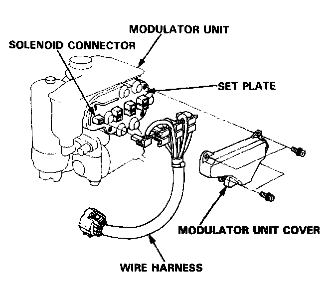
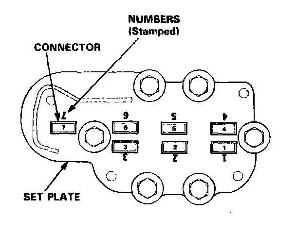

Wire Harness Replacement
Modulator Unit Wire Harness Replacement1. Remove the modulator unit from the car.

2. Remove the modulator unit cover, and remove the wire harness.
3. Check the numbers stamped on the set plate, and connect each connector of the new wire harness to the set plate of the corresponding number.
NOTE: Be sure that each connector is locked securely with the two locking tabs.

4. Install the modulator unit cover and modulator unit.
5. Check the ABS function using the ALB checker.